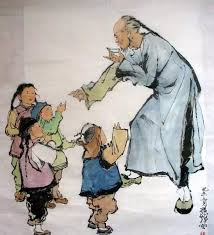

簡介──
和《狂人日記》同樣收錄在魯迅短篇集《吶喊》之中，是其在《狂人日記》之後撰寫的第二篇白話文小說。
故事描述「孔乙己」這個沒有考秀才的讀書人，因只擁有一些無用的知識、缺乏實際技能，而淪為酒館內人們的笑柄，旨在諷刺當時科舉考試製造了大量只懂鑽故紙堆，沒有實際營生技能的讀書人，亦凸顯人與人之間冷漠的一面。
心得感想──
《孔乙己》這篇作品應該是台灣每位高中生(或曾經是高中生)的共同回憶，但對於之後踏上中文系之路的我而言，《孔乙己》不禁令我重新審視自己，包括「自己在求學過程中學到的東西有何實用之處?」或是「讀書是否確實豐富了我的人生經歷與自我價值」等等，都是我在午夜夢迴時分，經常思考的問題。
台灣畢竟是一個實施十二年國教的國家，擁有高中、大學學歷的人滿街跑，大家都想要靠著自己求得的各類文憑、證書，去改善未來的生活，卻可能都忘了，如何避免成為下一個「孔乙己」。
